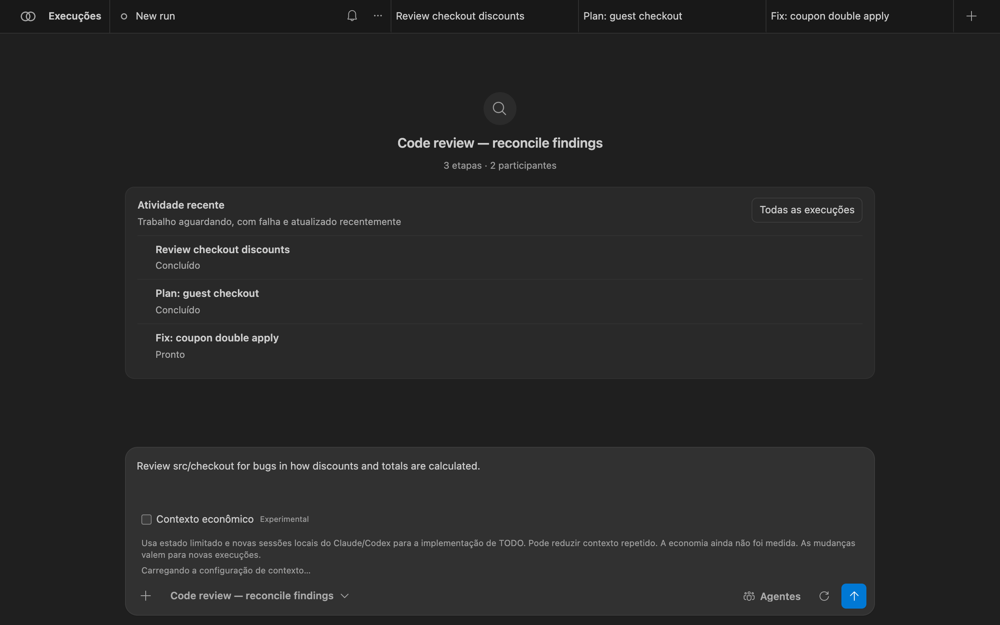
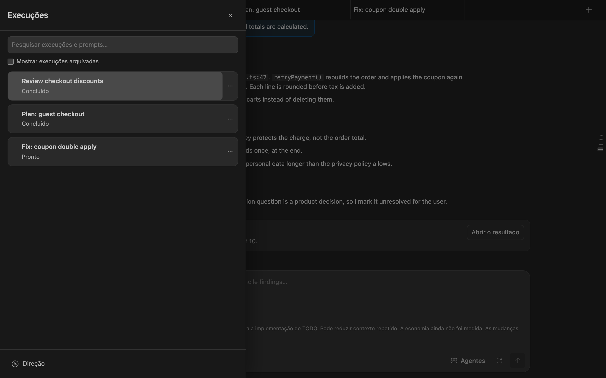
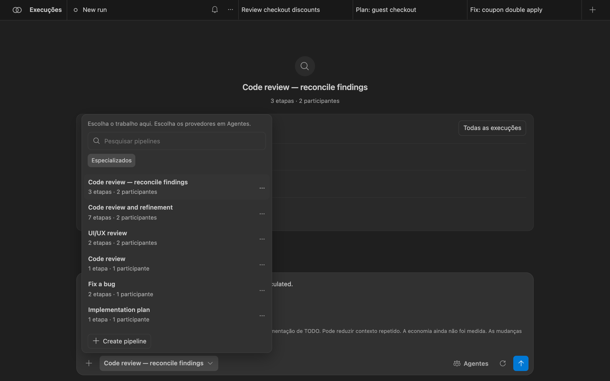
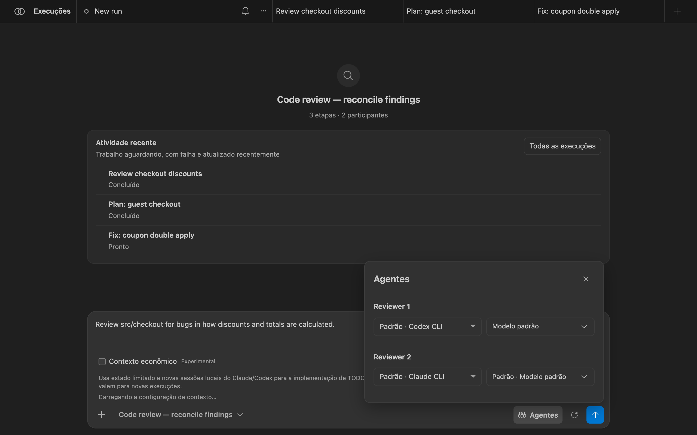
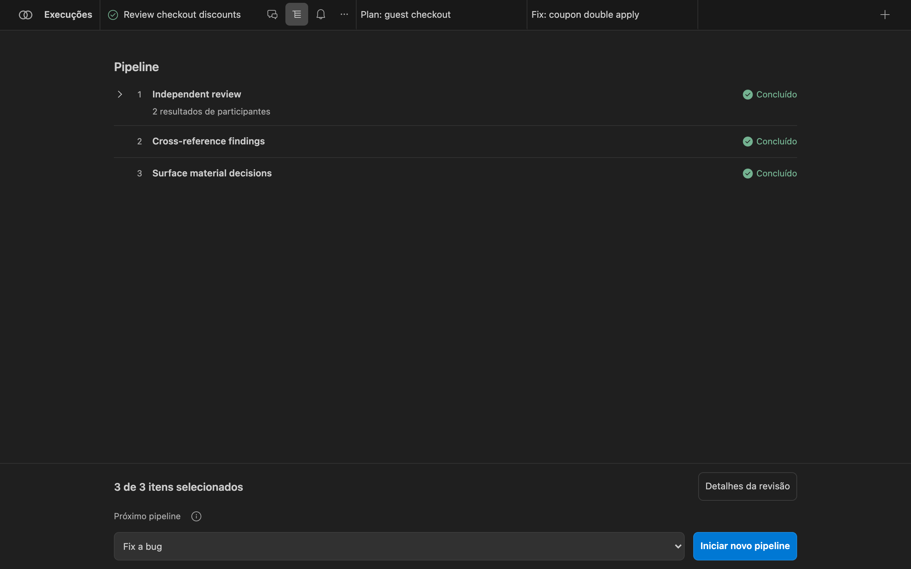
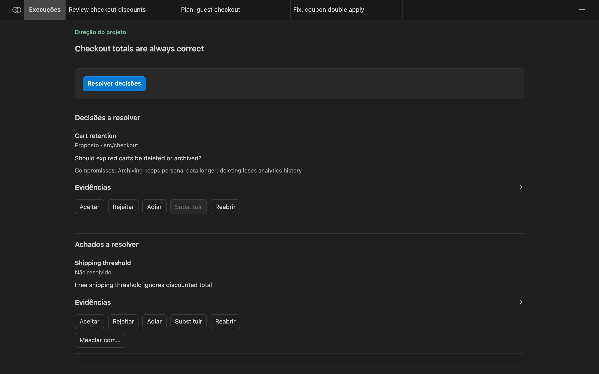
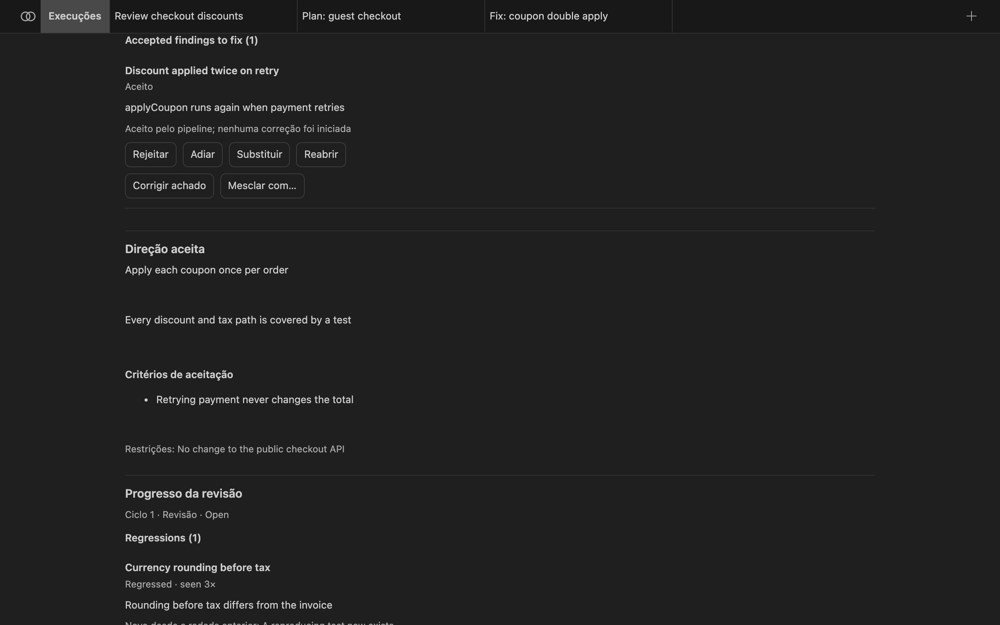
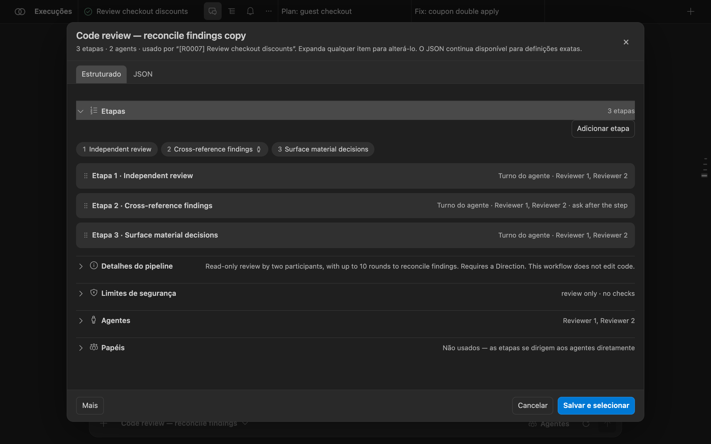
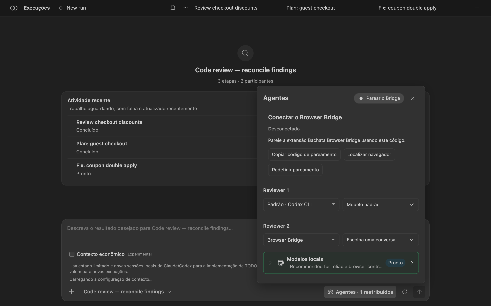
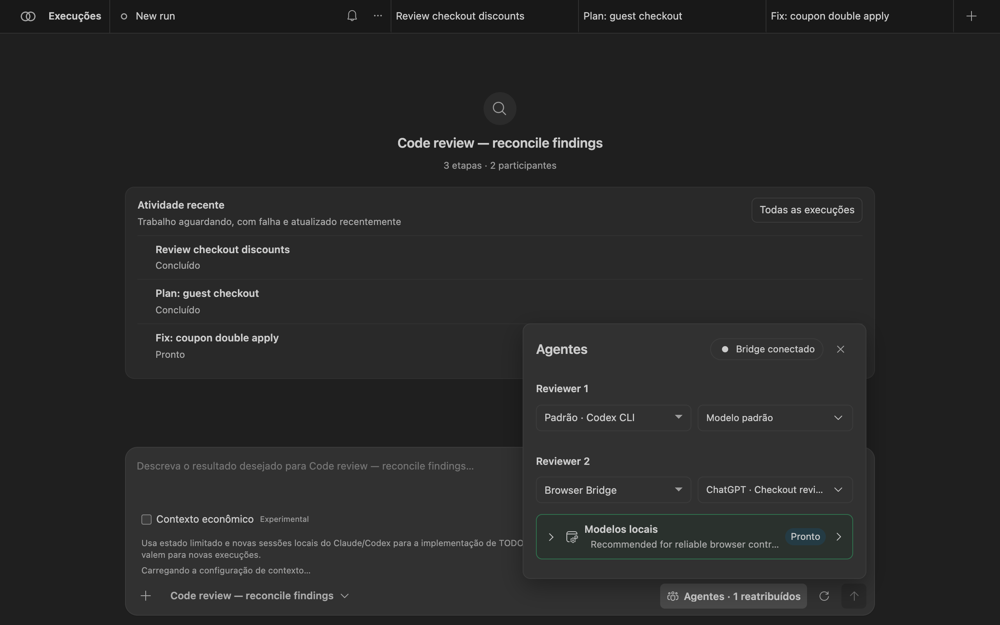

Monte seu próprio fluxo de trabalho com IA para trabalhar com software
O Bachata é uma extensão do VS Code que faz assistentes de IA trabalharem juntos em etapas definidas por você: um planeja, outro contesta, eles revisam e ajustam, e você decide o que importa.
Visão geral
O que é o Bachata
Um assistente de IA é uma ferramenta a quem você pede ajuda em linguagem comum para tarefas como planejar um recurso, escrever código ou encontrar defeitos. O Bachata roda dentro do Visual Studio Code e coordena assistentes que você já tem, como Codex e Claude Code.
Você organiza o trabalho como um pipeline: uma sequência de etapas, cada uma com um papel, instruções e o assistente que a executa. Por exemplo, dois revisores leem o código de forma independente e depois contestam os achados um do outro até concordarem ou entregarem a divergência a você.
Defina o fluxo
Papéis, instruções, ordem das etapas e rodadas de revisão.
Escolha quem faz o trabalho
Atribua Codex, Claude Code ou um chat do navegador a cada papel.
Reutilize e adapte
Comece por um pipeline integrado, edite-o ou crie o seu.
Acompanhe o resultado
Achados, decisões e mudanças, com as verificações que de fato rodaram.
O Bachata não inclui serviço de IA nem assinatura. Ele nunca cria um commit no Git. A IA pode errar mesmo quando os assistentes concordam, e uma execução concluída não prova que o código está correto.
Requisitos
- VS Code 1.101.0 ou mais recente.
- Uma pasta aberta em uma janela local confiável do VS Code. Pipelines comuns não exigem Git. A execução de listas de tarefas exige um repositório Git e Git 2.32 ou mais recente.
- Codex ou Claude Code, instalados e autenticados separadamente. Instale os dois se quiser que dois assistentes se verifiquem mutuamente.
- Opcional: a Browser Bridge extensão do Chrome, para usar ChatGPT, Claude ou outro site de chat como participante.
Comece aqui
Instalação
- Instalação Bachata no Visual Studio Marketplace. Para uma instalação offline ou de desenvolvimento, abra a Paleta de Comandos, execute Extensions: Install from VSIX… e selecione o arquivo
.vsixdo Bachata fornecido. - Abra a pasta em que quer trabalhar em uma janela local confiável do VS Code.
- Instale e autentique o Codex ou o Claude Code pelo fluxo de login da própria CLI.
Sem um repositório Git, os pipelines comuns continuam funcionando, mas o rastreamento de mudanças por Git, a verificação do escopo de escrita, a exportação de patches e a convergência de mudanças no repositório ficam indisponíveis.
O Bachata adiciona um ícone Bachata à Barra de Atividades e um guia Comece a usar o Bachata à página de boas-vindas do VS Code.
Verifique a prontidão com o Diagnóstico
Execute Bachata: Diagnóstico. O Diagnóstico separa os impedimentos do pipeline escolhido dos provedores opcionais indisponíveis, e cada verificação que falha oferece ações diretas e uma reverificação específica.
- O Codex é testado com um handshake do app-server. Nenhum thread é criado e nenhum modelo é chamado.
- O Claude Code é testado com
claude --version. - Os testes rodam na raiz do espaço de trabalho com ambiente restrito. Uma CLI que existe apenas no
PATHdo seu shell interativo fica invisível: definabachata.codexCommandoubachata.claudeCommandcom o caminho absoluto.
Executar a primeira revisão
- Execute Bachata: Configuração. Escolha Revisar código. O percurso padrão também oferece Planejar mudança e Corrigir defeito; a orquestração de TODO, os provedores de navegador e os pipelines personalizados ficam em Fluxos avançados.
- Escolha Um agente rápido (um provedor faz o trabalho) ou Dupla com verificação cruzada (dois participantes trabalham separadamente e conferem um passe). A configuração lista os provedores prontos e o que falta aos ausentes.
- Descreva no campo de mensagem o que quer revisar. Você também pode começar pelo editor: Bachata: Revisar arquivo, Revisar seleção, Revisar alterações não commitadas e comandos semelhantes preparam um rascunho sem enviá-lo.
- Abra as configurações da execução e leia o contrato: o que a execução pode ler e escrever, quais provedores participam e quais verificações rodam.
- Envie. Quando a execução terminar, abra o resultado.
{kind=link}

Usar o Bachata
O painel do Bachata
Abra-o com Bachata: Abrir ou pelo ícone na Barra de Atividades. Cada execução é uma aba no topo. Uma execução tem três visões:
- “Chat”: seu pedido e as respostas de cada participante, em ordem.
- “Execução”: as etapas do pipeline com seu status e o resultado da execução.
- “Direção”: o objetivo do projeto, as decisões que aguardam você e os achados aceitos ainda a corrigir, entre execuções.
![Visão “Chat” de uma execução concluída. Reviewer 1 relata dois problemas — desconto aplicado duas vezes em nova tentativa e arredondamento de moeda antes do imposto — e sugere arquivar carrinhos expirados. Reviewer 2 concorda com os dois problemas e discorda do arquivamento dos carrinhos. Na rodada 2, Reviewer 1 marca a questão dos carrinhos como não resolvida para o usuário. Um cartão de conclusão diz que os dois revisores chegaram ao mesmo conjunto de achados na rodada 2 de 10, com um botão para abrir o resultado.](../img/pt-br/run-transcript.png)
“Execuções” abre a gaveta de execuções: pesquisar execuções e prompts, mostrar execuções arquivadas e abrir “Direção”. O menu … de cada execução permite renomear, duplicar, arquivar ou excluir.
{kind=link}

Escolher um pipeline
O seletor de pipeline fica abaixo do campo de mensagem. A busca cobre nomes, IDs, descrições e papéis dos participantes. Os filtros separam fluxos comuns, especializados e internos; pipelines personalizados acrescentam “Personalizados” e “Todos”. O seletor escolhe o trabalho; “Agentes” escolhe os provedores.
{kind=link}

Cada etapa de um pipeline é de um destes tipos:
agent: um ou mais participantes fazem um turno, opcionalmente em paralelo ou até chegarem a consenso;assignRoles: vincular a agentes os papéis que você definiu;checklist: transformar achados aceitos em itens estritos;executeChecklist: executar os itens selecionados pelo controlador. Deve ser a última etapa ativada.
As rodadas de consenso são limitadas. Ao atingir o limite, o pipeline define o que acontece: decisão humana, falha ou decisão do líder. A concordância seleciona a saída de uma execução; não prova que a saída é verdadeira. Veja a lista de pipelines integrados.
Atribuir agentes
“Agentes” lista todos os papéis exigidos pelo pipeline escolhido. Para cada papel, escolha o provedor e, quando o provedor informar, o modelo. As mudanças valem para esta execução e ficam marcadas como reatribuídas; “Restaurar padrões” restaura as escolhas do próprio pipeline.
{kind=link}

O Bachata não traz catálogo de modelos. Quando o Codex consegue listar seus modelos, o Bachata mostra essa lista e recusa um modelo que o Codex instalado não ofereça. Quando um provedor não consegue listar modelos, o nome digitado é enviado como escrito. O Bachata nunca troca o provedor ou o modelo por você. Para impedir que um provedor rode, inclua-o em bachata.disabledProviders.
Optional typed-decision adapter
The browser action interpreter also exposes a guarded, controller-injected adapter seam for experiments such as Laya's system_one decision shape. It receives only bounded, read-only controller candidates and may accept only a complete, high-confidence classification of those existing IDs. Invalid, ambiguous, oversized or late responses fall back to the existing local model path and deterministic extraction.
Ler o contrato da execução
O botão de engrenagem ao lado do envio abre “Configurações da execução”. “Opções da execução” (iterações, modo fixo ou até ficar limpo, entrega) valem apenas para esta execução. “Detalhes da execução” é o contrato que o Bachata resolveu para exatamente esta execução:
- “Garantia”: que tipo de resultado esta execução pode produzir, por exemplo “Somente leitura”;
- “Provedores” e sua prontidão;
- “Escopo e commits”: diretório de trabalho, caminhos graváveis, legíveis e protegidos. O Bachata nunca cria commits;
- “Verificação”: quais verificações do controlador rodam, se houver;
- “Limites da execução”, “Decisões humanas”, “Alternativa”, “Conclusão”;
- “O que cada provedor recebe”: o contexto enviado, as exclusões e as omissões por provedor.
![Painel de configurações da execução com os detalhes expandidos para “Code review — reconcile findings”, marcado como Revisão · somente leitura. Garantia: esta execução pode ler o escopo escolhido e não pode alterar arquivos. Provedores: Reviewer 1 no Codex e Reviewer 2 no Claude Code, ambos prontos. Escopo: sem escrita no repositório, caminho legível src/checkout, caminhos protegidos .env e .git, sem commits. Verificação: nenhuma verificação do controlador. Limites: 1 iteração, no máximo 10 rodadas de consenso antes de uma decisão humana.](../img/pt-br/run-contract.png)
Se algo impedir a execução, como um provedor sem prontidão ou uma política do repositório que a recuse, o contrato lista o impedimento e o envio fica desabilitado até a resolução.
Ler o resultado
Abra “Execução” (o ícone de lista na aba da execução) ou escolha “Abrir o resultado” no Chat. A parte de cima lista cada etapa do pipeline e seu status. A barra inferior mostra quantos achados estão selecionados e oferece o próximo pipeline.
{kind=link}

“Detalhes da revisão” abre o resultado da execução:
- “Avaliação”, por exemplo “Concluído · revisado por modelo · não verificado”. Descreve como esta execução terminou, não se o software está correto.
- “Decisão final” e quem a produziu, por exemplo consenso unânime dos dois revisores.
- “Achados”, divididos em achados convergentes (aceitos após contestação) e achados não convergentes que precisam da sua confirmação. Cada um traz a localização, as evidências e as contestações levantadas.
- “Detalhes da avaliação”: riscos não resolvidos, lacunas de evidência e o registro de evidências (arquivos alterados, verificações, origem da decisão).
![Resultado da execução: Concluído · revisado por modelo · não verificado. “Veja os achados abaixo. Esta execução não tem nada a aplicar.” Decisão final: dois achados aceitos após contestação, uma divergência precisa da sua decisão, por consenso unânime de Reviewer 1 (codex-app-server) e Reviewer 2 (claude-code). Achados: 2 acionáveis, 1 precisa de decisão humana. Achados convergentes: “Discount applied twice on retry” em src/checkout/applyCoupon.ts:42 e “Currency rounding before tax” em src/checkout/totals.ts:18, cada um com evidências e contestações.](../img/pt-br/result-center.png)
“Copiar resultado” copia um resumo legível. “Mais” publica achados no painel Problemas, abre o Controle do Código-Fonte e exporta a execução como pacote JSON, relatório de evidências em Markdown ou achados SARIF. As exportações não levam URL de conversa do provedor nem identificador de sessão.
Visão Direção
A Direção guarda o que importa entre execuções, para você não precisar ler transcrições. Abra-a na parte de baixo da gaveta de execuções. Ela mostra o objetivo, a próxima ação útil e o que depende de você:
- “Decisões a resolver”: perguntas levantadas por um pipeline que mudam o rumo, com compromissos e evidências;
- “Achados a resolver”: achados em que os participantes não convergiram;
- “Achados aceitos a corrigir”, a direção aceita e os critérios de aceitação, o progresso da revisão, os artefatos e as verificações do repositório.
{kind=link}

Decisões que você pode registrar, quando o estado do item permitir:
| Decisão | Significado |
|---|---|
| Aceitar | Isto é real e o Bachata deve agir sobre isso. |
| Rejeitar | Não é real. Sai da área ativa e permanece no histórico. |
| Adiar | Real, mas não agora. |
| Substituir | Um registro posterior já existente substitui este. |
| Reabrir | Um item fechado volta a ficar ativo. Exige justificativa escrita e nova evidência material. |
Você não precisa aceitar um achado que o pipeline já aceitou depois de mais de um participante contestá-lo. Você supervisiona por exceção. Nada é excluído; itens resolvidos vão para o histórico.
Corrigir e aplicar
Uma revisão somente leitura não produz nada a aplicar. Quem produz a mudança é uma execução de correção. Em um achado aceito, escolha “Corrigir achado” na Direção, ou escolha um pipeline com permissão de escrita, como Fix a bug como próximo pipeline na Execução.
{kind=link}

A execução de correção recebe um prompt restrito àquele achado: assunto, localização, evidências e contestações levantadas. O Bachata escolhe o pipeline de correção a partir de bachata.fixPipelineId, depois do pipeline escolhido na execução de origem e, por fim, do pipeline integrado managed-fix. Um pipeline somente leitura é recusado.
Aplicar o trabalho retido
Alguns fluxos alteram a pasta escolhida diretamente; os isolados mantêm as mudanças em um worktree Git separado até você aplicá-las. O contrato da execução informa qual é o caso. Ao aplicar:
- O Bachata prepara o trabalho na sua árvore de trabalho, no branch atual, e não cria commit. Você revisa no Controle do Código-Fonte e faz o commit você mesmo.
- A aplicação é recusada quando a verificação está desatualizada, falhou ou foi cancelada. Aplicar uma execução inconclusiva é uma exceção explícita.
- Aplicar um subconjunto reexecuta as verificações da execução exatamente sobre os bytes que você selecionou.
Rodadas de novas revisões
Uma revisão nova inicia uma revisão independente do estado atual do repositório. As sessões dos provedores são reiniciadas e nenhuma conclusão anterior entra nos prompts. Achados anteriores servem para comparação depois da revisão, nunca antes.
Quando uma segunda rodada entra no mesmo ciclo de revisão, a Direção informa o que mudou: achados novos, repetidos, resolvidos e com regressão, achados reabertos por nova evidência e mudanças de decisão. A identidade de um achado não depende da redação, então uma repetição parafraseada é um achado com duas ocorrências.
O Bachata informa saturação apenas quando várias revisões novas consecutivas não acrescentaram nada material, os achados aceitos estão resolvidos, as decisões centrais estão fechadas e as verificações exigidas estão atualizadas. Saturação significa que revisar de novo parou de encontrar problemas materiais. Não é prova de correção.
Uma revisão nova só roda um pipeline somente leitura que produza achados. Defina bachata.freshReviewPipelineId para escolher um quando o pipeline selecionado não servir.
Editar pipelines
Nas configurações da execução, escolha “Editar pipeline”, “Novo pipeline” ou “Bifurcar o selecionado”. Editar um pipeline integrado cria uma cópia. O editor tem um formulário Estruturado e um modo JSON para definições exatas. As etapas podem ser reordenadas, duplicadas e desativadas; “Limites de segurança”, “Agentes” e “Papéis” são seções separadas.
{kind=link}

Ative bachata.advancedMode para mostrar o editor completo: papéis, consenso, saídas tipadas, pontos de decisão humana, capacidades, modos de permissão, políticas de aprovação, modelos de prompt e políticas de caminho. Pipelines podem ser exportados e importados como JSON (versão JSON do pipeline 1). As execuções mantêm exatamente o instantâneo do pipeline com que começaram.
Piloto local congelado
Use menos contexto repetido de modelo
O Bachata agora inclui a primeira implementação em código de um modo de execução econômico em tokens para Claude Code e Codex. O objetivo é enviar o menor estado suficiente para a próxima decisão, em vez de reenviar repetidamente respostas anteriores completas, saída de verificação e histórico da conversa.
bachata.executionContextMode ainda permite ativá-lo; enquanto estiver ligado, o controle aparece no compositor de Runs, no menu “Agentes” para que possa ser desligado.
legacy continua como padrão. Execuções ativas e recuperáveis mantêm o modo registrado. Nenhuma afirmação sobre tokens, custo, latência ou qualidade.
Por que isso pode ajudar
- Provedores locais podem manter a conversa enquanto o Bachata também envia uma transferência explícita.
- Rodadas de consenso podem levar respostas completas dos outros participantes para rodadas seguintes.
- O trabalho no navegador pode exigir respostas separadas do modelo para uma alteração e para verificações predeterminadas do controlador.
- Os limites de bytes atuais evitam cargas descontroladas, mas não criam evidências exatas recuperáveis.
Implantação
- Implementado: preservar as evidências admitidas exatas. Armazenar prompts do Bachata, respostas recebidas e evidências do controlador antes de gerar prévias compactas. Se as evidências exatas não puderem ser mantidas, a execução compacta não começa.
- Implementado e depois congelado: piloto de estado local limitado. Iniciar sessões novas do Claude Code ou do Codex com estado de tarefa tipado, a última observação do controlador e referências de evidência delimitadas. O fluxo atual continua como padrão. O piloto offline não encontrou economia, então esta etapa está congelada.
- Projetar o consenso com segurança. Levar adiante acordos, divergências, autoria e decisões pendentes sem tratar objeções omitidas como resolvidas.
- Acrescentar recuperação no navegador e fusão segura de ações. Deixar o controlador fornecer páginas de evidência exatas e combinar alteração com verificações já autorizadas somente onde os limites de aprovação e recuperação permaneçam claros.
Limite de segurança
O controlador continua responsável por Git, escopo de escrita, verificação, integração e recuperação. Estado inválido, desatualizado, incompleto ou grande demais falha de forma segura. As evidências admitidas exatas continuam exportáveis, o histórico privado do provedor não é apresentado como capturado, e nenhuma camada de telemetria ou medição em tempo de execução é adicionada.
Leia o documento técnico e o artigo externo SoL-Pi que motivou esta investigação. Os resultados relatados no artigo não são resultados do Bachata.
Browser Bridge
Use seus chats do navegador a partir do Bachata
O Bachata Browser Bridge é uma extensão do Chrome separada. Ele liga o Bachata no VS Code a sites de chat com IA, como ChatGPT e Claude, para que uma conversa no seu navegador possa ser participante de um pipeline. Quando uma etapa de navegador roda, o Bridge envia a mensagem ao chat conectado e traz a resposta de volta ao VS Code.
Você só precisa dele para participantes de navegador. Codex e Claude Code não o usam.
Requisitos
- Chrome 116 ou mais recente.
- Uma janela local do VS Code com o Bachata. Remote SSH, WSL e Codespaces não alcançam um navegador local.
- Uma versão do Bridge cuja versão de protocolo corresponda à sua versão do Bachata. Uma divergência é recusada, não degradada: atualize os dois juntos.
- Uma aba do ChatGPT ou do Claude com login feito, ou outro site de chat configurado por você.
Instalar o Bridge
- Abra Bachata Browser Bridge na Chrome Web Store.
- Escolha “Usar no Chrome” e confirme a instalação.
- Mantenha o Bachata para VS Code e o Browser Bridge atualizados juntos para que as versões de protocolo correspondam.
Para instalação offline ou de desenvolvimento, baixe um ZIP e sua soma de verificação na página oficial de releases, verifique com shasum -a 256 bachata-browser-bridge-<version>.zip, descompacte e carregue essa pasta em chrome://extensions com o modo de desenvolvedor ativado. Compilar a partir do código-fonte gera a pasta carregável dist/ ; a raiz do repositório não pode ser carregada.
Parear com o VS Code
- No Bachata, abra “Agentes” e atribua Browser Bridge a um papel. Um indicador de status do Bridge aparece no topo de Agentes; quando o Bridge não está pareado, ele mostra “Parear o Bridge”. Selecione-o.
- Escolha “Copiar código de pareamento”. “Localizar navegador” inicia a busca de novo; “Redefinir pareamento” emite um novo código.
- Abra o popup do Bridge no Chrome e escolha Paste & connect. Se você digitar ou colar o código no campo, escolha “Connect to VS Code” em vez disso.
{kind=link}


O endereço local é preenchido automaticamente. Abra “Connection settings” apenas se o VS Code mostrar um endereço diferente. O Bridge mantém uma conexão, então só uma janela do VS Code por perfil de usuário é dona do Bridge por vez; as outras janelas continuam podendo usar Codex e Claude Code.
Escolher um chat
- Abra uma conversa no ChatGPT ou no Claude e faça login.
- No popup, escolha “Refresh tabs”. Cada linha mostra o provedor, o título, a prontidão e eventuais limitações. “Details” mostra a identidade da aba e da conversa.
- Escolha “Use this chat” em uma conversa pronta. Só as linhas prontas oferecem isso, e apenas com a conexão ativa.
- Em “Agentes”no Bachata, escolha essa conversa para o papel de navegador.


{kind=link}

O vínculo sobrevive ao fechamento do popup e à reinicialização do worker do navegador. Só é preciso vincular de novo se a aba for fechada, navegar para outro site ou tiver sua conversa trocada manualmente.
Outros sites de chat
Para um site que não seja ChatGPT nem Claude, abra Outros sites no popup e escolha “Set up current website” e permita a origem exibida. Feche o popup e use o painel de configuração na página: detectar automaticamente ou escolher os controles (campo de mensagem e região da conversa são obrigatórios; enviar, parar e nova conversa são opcionais) e então validar. A validação não envia mensagem de chat.

Outros sites recebem apenas texto; imagens e arquivos para download não são suportados. Um site sem controles verificados de enviar e parar serve para fluxos manuais, mas não para execuções gerenciadas sem supervisão. Sites que você não vinculou nunca são descobertos, e o Bridge nunca abre uma aba dessas por você.
Limitações
- Os sites dos provedores mudam sem aviso. Uma versão funcional do Bridge só é evidência para as versões de site contra as quais foi testada.
- O Bridge não automatiza login nem CAPTCHAs e não acrescenta texto oculto ao prompt.
- Após uma falha, a recuperação mostra o que foi registrado e nunca reenvia um prompt automaticamente.
Referência
Comandos
Todos os comandos estão na Paleta de Comandos sob Bachata:.
| Comando | O que faz |
|---|---|
| Abra | Abrir o painel do Bachata. |
| Configuração | Escolher um objetivo e quantos assistentes trabalham nele. |
| Diagnóstico | Verificar provedores, Git e requisitos do pipeline, com correções. |
| Revisar arquivo / Revisar seleção | Preparar um rascunho de revisão para o arquivo atual ou a seleção. |
| Revisar diff preparado / Revisar alterações não commitadas | Preparar um rascunho de revisão para as alterações locais. |
| Revisar commit / Revisar intervalo de commits / Revisar branch contra a base | Preparar um rascunho de revisão para o histórico do Git. |
| Publicar achados em Problemas | Mostrar achados no painel Problemas. |
| Corrigir diagnóstico | Preparar um rascunho de correção para um diagnóstico do editor ou do painel Problemas. |
| Explicar pipeline | Descrever o que um pipeline faz. |
| Verificadores do repositório / Configurar verificadores e política do repositório | Declarar as verificações do repositório que uma execução pode rodar. |
| Executar TODO.md, Prever plano de TODO, Retomar / Parar / Abandonar execução de TODO, Mostrar status da execução de TODO | Orquestrar tarefas de um TODO.md do Bachata fornecido. |
| Melhorar este projeto | Executar o fluxo de autoaperfeiçoamento. |
| Inspecionar pacote de execução / Reproduzir pacote de execução | Abrir um registro de execução exportado. |
| Registrar evidência externa | Registrar evidências produzidas fora do Bachata. |
| Dados locais | Revisar e excluir dados locais de execuções. |
| Propriedade do espaço de trabalho | Mostrar qual janela do VS Code pode executar trabalho neste espaço. |
| Limpar quarentena de recursos | Liberar recursos compartilhados em quarentena. |
Pipelines integrados
| Pipeline | Descrição |
|---|---|
| Code review | Revisão somente leitura por um participante. Os achados vêm de uma única fonte. |
| Code review — reconcile findings | Revisão somente leitura por dois participantes, com até 10 rodadas para conciliar achados. Exige uma Direção. |
| Code review and refinement | Dois participantes revisam e conciliam achados em até 4 rodadas; depois um implementador corrige os achados confirmados dentro do escopo declarado. |
| UI/UX review | Revisão somente leitura de usabilidade, acessibilidade e hierarquia visual por dois revisores. |
| Review and prepare tasks | Dois participantes conciliam achados e depois preparam uma lista de tarefas selecionáveis. |
| Identify decisions for you | Dois participantes conciliam as escolhas que exigem julgamento humano. Somente leitura. |
| Implementation plan | Produzir um plano de implementação sem editar arquivos. |
| Implementation plan — reconcile proposals | Dois planejadores conciliam um plano em até 10 rodadas. Exige uma Direção. |
| Fix a bug | Diagnosticar e implementar uma correção com um participante. Roda as verificações declaradas do controlador; não cria commit. |
| Fix a bug — reviewed tasks | Dois participantes conciliam o diagnóstico; você seleciona tarefas delimitadas para o controlador implementar. |
| Fix within a declared scope | Um executor implementa dentro dos caminhos configurados; o controlador roda as verificações declaradas. Exige uma Direção. |
| Diagnose and fix — model review | Dois participantes conciliam um diagnóstico, implementam uma correção e a revisam. A verificação é revisão por modelo. |
| Deliver a feature | Conciliar requisitos e projeto, depois implementar e revisar dentro de um escopo declarado com verificações do controlador. |
| Product direction review | Revisar escolhas de produto e conciliar recomendações. Exige uma Direção. |
Pipelines marcados como “Internos” no seletor são estágios do controlador para orquestração de TODO e autoaperfeiçoamento.
Configurações principais
| Configuração | Padrão | Finalidade |
|---|---|---|
bachata.codexCommand | codex | Executável do app server do Codex. |
bachata.claudeCommand | claude | Executável do Claude Code. |
bachata.preferredProvider | auto | Provedor preferido quando um pipeline oferece mais de um. |
bachata.disabledProviders | [] | Provedores que o Bachata nunca deve executar. |
bachata.advancedMode | false | Mostrar o editor de pipeline completo. |
bachata.notificationMode | material | Quais notificações o Bachata mostra. |
bachata.fixPipelineId | vazio | Pipeline usado para “Corrigir achado”. |
bachata.freshReviewPipelineId | vazio | Pipeline usado em revisões novas quando o selecionado não serve. |
bachata.maxPipelineIterations | 10 | Máximo de iterações sequenciais em uma execução. |
bachata.browserBridgePort | 43127 | Porta de loopback à qual o Browser Bridge se conecta. |
bachata.todoFile | TODO.md | Lista de tarefas usada pela orquestração de TODO. |
Configurações que ampliam o que uma execução pode fazer, como modos de permissão e diretórios de trabalho externos, são lidas apenas das configurações de usuário ou da máquina, de modo que um repositório aberto não pode conceder mais poderes a si mesmo.
Privacidade
O Bachata trabalha sobre a sua cópia local. Não há conta do Bachata, serviço hospedado nem telemetria. Prompts, código selecionado e respostas vão para os provedores que você escolher; o contrato da execução mostra o que cada provedor recebe antes do início. As credenciais do provedor ficam com a CLI ou a sessão de navegador dele.
Sobre as capturas de tela
As capturas de tela mostram o painel real do Bachata (dist/webview.js) e o popup real do Bridge, renderizados no Chrome fora do VS Code com as cores do tema Dark Modern do VS Code. O repositório demo-shop, suas execuções, achados, decisões e abas de chat são dados de demonstração inventados. No VS Code o painel aparece dentro de uma aba do editor.